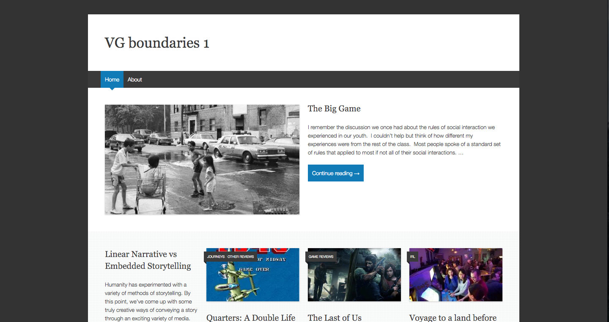

Course Blog
The class maintained a course blog hosted on a multi-site WordPress framework.
Students were responsible for a maintaining a weekly output of blog posts
relevant to the games we were playing and the topics we were discussing in class.
Students were encouraged to engage in active discourse across the blogs:
challenging others ideas and supporting arguments they found strong.
Blog articles focused on a variety of topics: these ranged from social-political issues
to reviews of the games themselves.
Archive of My Blog Articles

Multiculutral Perspectives Videogames & the
Boundaries of Narrative
My Multicultural Perspectives requirement is met by a course I took in Spring 2015:
Videogames and the Boundaries of Narrative. The course focused on video games containing
cultural and sociopolitical themes. During class time and through our coursework we analyzed
these games in the context of the global social climate. We worked on student teams to create
multimedia projects that approached these existing pieces of multimedia with a critical lens.
The diversity of the postings on our class blog were
indicative of the range of opinions and knowledge within the sixty student class.